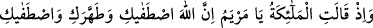
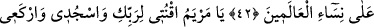
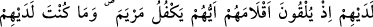
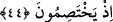

MERYEM’İN İBADET VE KULLUĞU
42. Hani melekler demişlerdi: Ey Meryem! Allah seni seçti; seni tertemiz yarattı
ve seni bütün dünya kadınlarına tercîh etti.
43. Ey Meryem! Rabbine ibâdet et; secdeye kapan, (O’nun huzurunda)
eğilenlerle beraber sen de eğil.
44. (Rasûlüm!) Bunlar, bizim sana vahiy yoluyla bildirmekte olduğumuz gayb
haberlerindendir. İçlerinden hangisi Meryem’i himayesine alacak diye kur’a
çekmek üzere kalemlerini atarlarken sen onların yanında değildin; onlar (bu
yüzden) çekişirken de yanlarında değildin.
“Hani Melekler…… demişlerdi.” Ey Muhammed (s.a.)! Meleklerin, yani Cibrîl’in
Meryem’e….. dediği vakti hatırla. Burada meleklerden maksadın Cibrîl olduğunu,
“Ona, yani Meryem’e ruhumuzu (Cebrâil’i) gönderdik, karşısında dosdoğru bir
beşer olarak temessül etti.” (Meryem, 19/17) âyetinin delâletinden anlıyoruz. Cibrîl,
Meryem’in ondan korkmaması için karşısında yaratılışı tam ve düzgün bir beşer olarak
temessül etti. Âyette Cibrîl’in şânını ta’zîm için “melekler” diye çoğul sıygasıyla
anıldı. Bu da Cibrîl, meleklerin büyüğü olduğu içindir.
“Ey Meryem!” hitabı, Cibrîl’in Meryem’e hıtâbıdır. Ona gelen bir vahiy değildir.
Çünkü Cenâb-ı Hak, “Senden önce de kendilerine vahyettiğimiz erkeklerden
başkalarını peygamber olarak göndermedik.” buyurduğu için (el-Enbiyâ, 21/7)
kadınların peygamber olmayacağında icmâ vardır. Cibrîl, Meryem’e kerâmet olmak
üzere şifâhen konuşmuştur. Velîlerin kerâmeti haktır. Yahud bu, Îsâ (a.s.)’ın nübüvvetine
bir hazırlık kabilindendir. Buna “irhâs” denir. Rihs’den gelmektedir. Rihs, sözlükte
duvarın ilk örülen sırasıdır. Terim olarak “rıhs” yahud “irhâs”; peygamberlikten önce,
mûcizeye benzeyen şeylerin zuhûr etmesidir. Peygamberimiz’i bulutun gölgelemesi,
taşın ve çamurun konuşması, yıldızlarla taşlamak, fil hadisesi ve benzerleri gibi.
“Ey Meryem! Şüphesiz ki Allah seni seçti.” Önce seni annenden Mescid-i Aksa
hizmeti için güzel bir şekilde kabul etmekle seçmiştir. Halbuki senden başka bir kızı
böyle bir hizmete kabul etmemiştir. Seni Zekeriya (a.s.) gibi bir peygamberin elinde